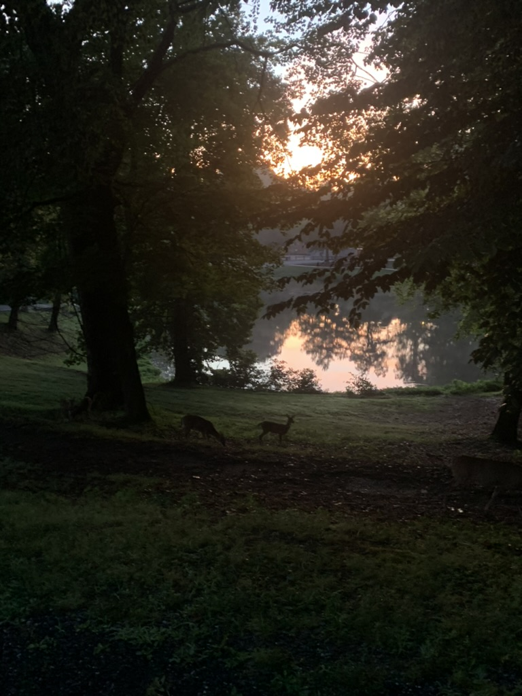
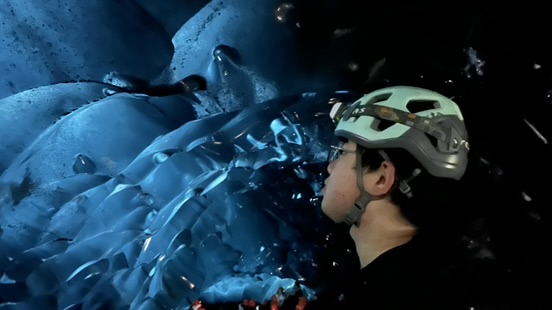

DSC 291
Graduate-Level Coursework//graduate_level_coursework
Completed as an undergraduate at UC San Diego.
MATH 287A–C
Time Series & Advanced Time Series Analysis
DSC 240
Machine Learning
MATH 282A–B
Applied Statistics I–II
Hobbies//hobbies
🌐 Languages
Two years of Japanese and still going. It started with J‑pop and anime, and these days it is mostly manga.
🎵 Music
I play a few instruments and produce electronic music in Ableton. Most of it comes down to how much structure to impose and how much to let emerge — the same question I keep asking about inductive bias in models.
📚 History
I read history for the mechanism rather than the anecdotes: how productivity and a society’s way of understanding the world end up shaping its behaviour — a complex system of feedback and emergence more than a chain of clean causes. It is the same question I chase in research, at a different scale.
Travel//travel
A few places I’ve been.

Greensboro
Qinghai
